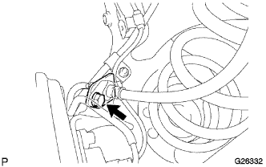

リヤアクスルビーム 取り外し |
| 1. リヤアブソーバ キャップ取りはずし |
| 2. リヤタイヤ取りはずし |
| 3. スキッドコントロール センサ ワイヤ切り離し |
スキッドコントロールセンサのコネクタを切り離す。
| 4. リヤブレーキ チューブ NO.4切り離し |
 |
ユニオンナットレンチを使用して、ブレーキチューブを切り離す。
クリップを取りはずす。
| 5. リヤブレーキ チューブ NO.3切り離し |
| 6. フレキシブルホース ブラケット NO.4取りはずし |
|  |
ボルトをはずし、フレキシブルホースブラケットを取りはずす。
| 7. フレキシブルホース ブラケット NO.3取りはずし |
| 8. リヤブレーキ ドラム取りはずし |
 |
パーキングブレーキを解除し、リヤブレーキドラムを取りはずす。
| 9. リヤアクスル ハブ ＆ ベアリングASSY LH取りはずし |
 |
ナットをはずし、パーキングブレーキケーブルASSY No.3をリヤアクスルビームから切り離す。
 |
ボルト4本をはずし、リヤアクスルハブ&ベアリングASSY LHを取りはずす。
リヤブレーキASSYをリヤアクスルビームから切り離す。
| 10. リヤアクスル ハブ ＆ ベアリングASSY RH取りはずし |
| 11. リヤアクスル ビームASSY緩め |
リヤアクスルビームのボルト2本をゆるめる。
 |
| 12. ショック アブソーバASSY RR LH切り離し |
 |
リヤショックアブソーバASSY LHの二面幅を固定してナット2個を緩める。
 |
木片を介して、リヤアクスルビームをジャッキで支える。
ナットおよびリヤショックアブソーバスペーサをはずし、リヤショックアブソーバASSY LH(ロワー側)をリヤアクスルビームASSYから切り離す。
| 13. ショック アブソーバASSY RR RH切り離し |
| 14. コイル スプリング RR LH取りはずし |
 |
リヤコイルスプリングLHを再使用する場合は、識別ペイントが付いているか確認し、消えている場合は車両下側および車両後方に識別ペイントを付ける。
ジャッキを徐々に下げて、リヤコイルスプリングLHを取りはずす。
リヤコイルスプリングインシュレータUPR LHおよびリヤコイルスプリングインシュレータLWR LHを取りはずす。
| 15. コイル スプリング RR RH取りはずし |
| 16. リヤアクスル ビームASSY取りはずし |
ボルト2本をはずし、リヤアクスルビームを取りはずす。
| 17. リヤアクスルキャリヤ ブシュ LH取りはずし |
ブシュの切り欠きに合わせて、リヤアクスルビームに合わせマークを付ける。
タガネおよびハンマーを使用して、ブシュのリブ部２箇所を折り曲げる。
| 18. リヤアクスルキャリヤ ブシュ RH取りはずし |